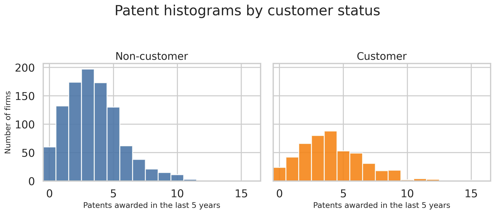
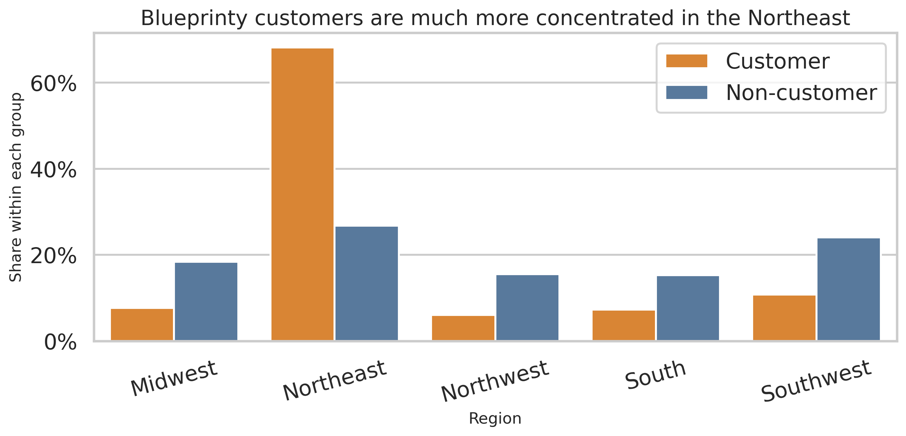
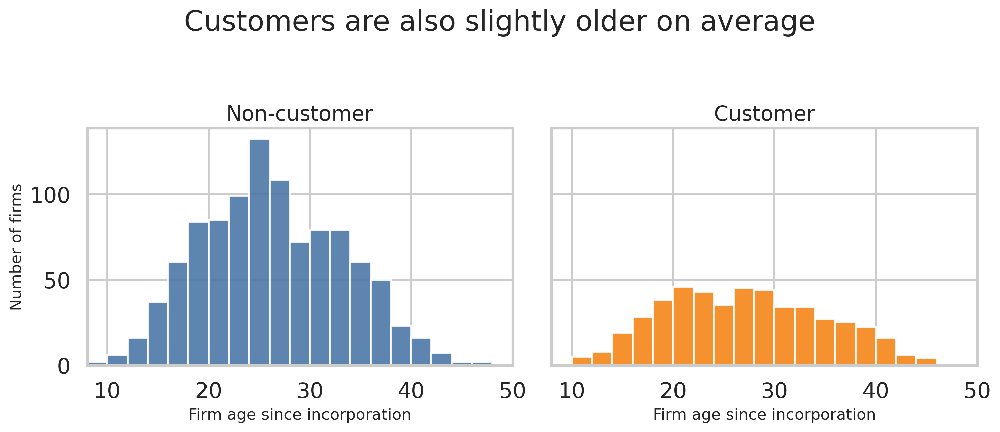
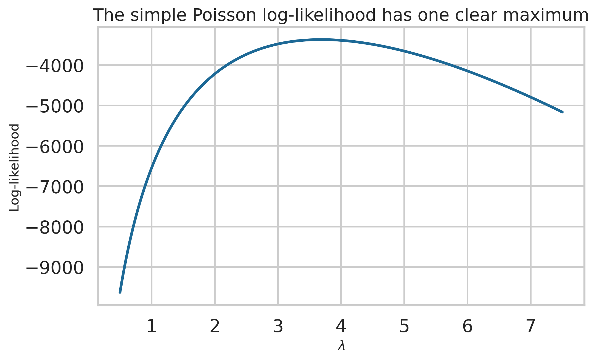
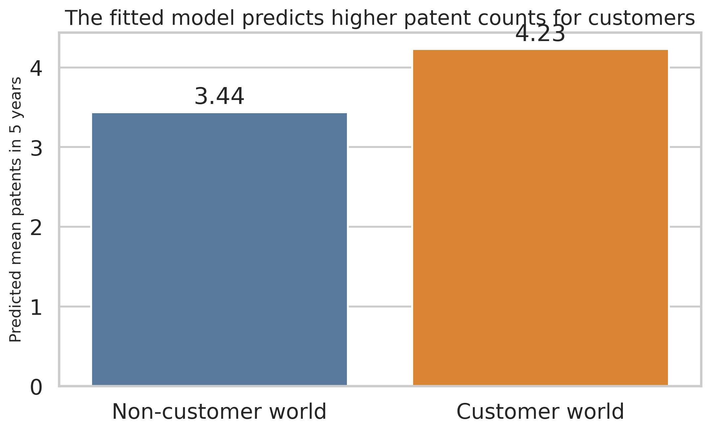

| Group | Firms | Mean patents in 5 years | Mean firm age |
|---|---|---|---|
| Customer | 481 | 4.133 | 26.90 |
| Non-customer | 1,019 | 3.473 | 26.10 |

Does Blueprinty’s software help firms win more patents?
Lele Liao
May 5, 2026
Blueprinty sells software that helps engineering firms prepare blueprint documents for patent applications. The marketing team wants to say something simple and attractive: firms that use Blueprinty get more patents approved.
The problem is that this is not easy to prove. We do not have before-and-after data for the same firms. Instead, we have one cross section of 1,500 mature engineering firms. For each firm, we know its number of patents awarded in the last five years, its region, its age since incorporation, and whether it is a Blueprinty customer.
This means a raw comparison can be misleading. Blueprinty customers were not chosen at random. If customers are older, or if they are concentrated in regions where patenting is already stronger, then a higher patent count may reflect those differences instead of the software itself. So the goal of this post is not to prove causality. The goal is to use a careful Poisson regression and maximum likelihood estimation (MLE) to see whether the data are consistent with Blueprinty’s claim after we control for observable differences.
The first question is descriptive. Do customers appear to have more patents than non-customers?
| Group | Firms | Mean patents in 5 years | Mean firm age |
|---|---|---|---|
| Customer | 481 | 4.133 | 26.90 |
| Non-customer | 1,019 | 3.473 | 26.10 |

The raw difference is clear. Non-customers average 3.473 patents, while customers average 4.133 patents over five years. At first glance, this looks good for Blueprinty.
But this comparison is not enough. A higher raw mean does not automatically mean the software caused the difference. We need to check whether the two groups also differ in other ways.

Region matters a lot here. About 68.2% of Blueprinty customers are in the Northeast, but only 26.8% of non-customers are. That means the customer group has a very different geographic mix. If patent outcomes vary by region, then part of the raw customer advantage may come from location rather than the software.

Age differences are smaller than region differences, but they still matter. Customers average 26.90 years old, while non-customers average 26.10 years old. That is not a huge gap, but patenting is likely related to firm maturity, so age should still be controlled for in the model. I will also include age squared because the relationship may rise and then flatten or fall, rather than stay perfectly linear.
The outcome here is a count: the number of patents awarded in the last five years. Counts cannot be negative, and they are integer-valued. Because of that, a Normal model is not a natural starting point. A Poisson model is more sensible.
Assume
\[ Y_i \sim \text{Poisson}(\lambda) \]
for every firm in a simple model with one common rate parameter. The Poisson probability mass function is
\[ f(Y_i \mid \lambda) = \frac{e^{-\lambda}\lambda^{Y_i}}{Y_i!}. \]
If the observations are independent and identically distributed, the joint likelihood is
\[ \begin{aligned} L(\lambda \mid Y_1,\ldots,Y_n) &= \prod_{i=1}^n \frac{e^{-\lambda}\lambda^{Y_i}}{Y_i!} \\ &= \frac{e^{-n\lambda}\lambda^{\sum_{i=1}^n Y_i}}{\prod_{i=1}^n Y_i!}. \end{aligned} \]
Taking logs gives the log-likelihood:
\[ \begin{aligned} \ell(\lambda) &= \log L(\lambda \mid Y_1,\ldots,Y_n) \\ &= \sum_{i=1}^n \left(-\lambda + Y_i \log \lambda - \log(Y_i!)\right) \\ &= -n\lambda + \left(\sum_{i=1}^n Y_i\right)\log \lambda - \sum_{i=1}^n \log(Y_i!). \end{aligned} \]
Here is the log-likelihood in code, followed by a plot over many possible values of \(\lambda\).
def poisson_loglikelihood(lam, y):
if lam <= 0:
return -np.inf
return np.sum(-lam + y * np.log(lam) - gammaln(y + 1))
lambda_grid = np.linspace(0.5, 7.5, 300)
loglik_grid = [poisson_loglikelihood(lam, y) for lam in lambda_grid]
fig, ax = plt.subplots(figsize=(8, 5))
ax.plot(lambda_grid, loglik_grid, color="#1D6996", linewidth=2.5)
ax.set_xlabel(r"$\lambda$")
ax.set_ylabel("Log-likelihood")
ax.set_title("The simple Poisson log-likelihood has one clear maximum")
plt.tight_layout()
plt.show()
This curve tells us which values of \(\lambda\) make the observed patent counts more plausible. The best estimate is the value where the curve reaches its highest point. Visually, the peak is close to 3.68.
We can also solve for the MLE analytically. Differentiate the log-likelihood:
\[ \frac{\partial \ell(\lambda)}{\partial \lambda} = -n + \frac{\sum_{i=1}^n Y_i}{\lambda}. \]
Set this equal to zero and solve:
\[ \hat{\lambda}_{\text{MLE}} = \frac{1}{n}\sum_{i=1}^n Y_i = \bar{Y}. \]
So the Poisson MLE is simply the sample mean. That feels right because the mean of a Poisson distribution is \(\lambda\).
simple_result = minimize_scalar(
lambda lam: -poisson_loglikelihood(lam, y),
bounds=(0.01, 15),
method="bounded",
)
simple_table = pd.DataFrame(
{
"Numerical MLE": [simple_result.x],
"Sample mean": [y.mean()],
"Absolute difference": [abs(simple_result.x - y.mean())],
}
)
show_table(
simple_table,
"Table 2. The numerical MLE and the sample mean are the same up to rounding.",
{
"Numerical MLE": "{:.6f}",
"Sample mean": "{:.6f}",
"Absolute difference": "{:.8f}",
},
)| Numerical MLE | Sample mean | Absolute difference |
|---|---|---|
| 3.684666 | 3.684667 | 0.00000066 |
The two numbers are almost identical. That is exactly what the theory predicts.
The simple model above assumes every firm has the same patent rate. That is too restrictive for this case. We want each firm to have its own expected count based on age, region, and customer status.
So I now use a Poisson regression:
\[ Y_i \sim \text{Poisson}(\lambda_i) \qquad \text{where} \qquad \lambda_i = \exp(X_i' \beta). \]
This solves an important problem. The linear index \(X_i' \beta\) can be any real number, but the Poisson rate \(\lambda_i\) must be positive. The exponential link guarantees that \(\lambda_i > 0\) for every firm.
The regression log-likelihood becomes
\[ \ell(\beta) = \sum_{i=1}^n \left[ Y_i(X_i'\beta) - \exp(X_i'\beta) - \log(Y_i!) \right]. \]
I build the design matrix with:
iscustomer.I drop one region because the intercept already captures the base category. If I kept every region dummy, I would create perfect multicollinearity.
region_dummies = pd.get_dummies(df["region"], prefix="region", drop_first=True, dtype=float)
X = pd.concat(
[
pd.Series(1.0, index=df.index, name="const"),
df[["age", "age_sq"]],
region_dummies,
df[["iscustomer"]],
],
axis=1,
)
X_mat = X.to_numpy(dtype=float)
def poisson_regression_loglikelihood(beta, y, X):
eta = X @ beta
mu = np.exp(eta)
return np.sum(y * eta - mu - gammaln(y + 1))
def neg_poisson_regression_loglikelihood(beta, y, X):
return -poisson_regression_loglikelihood(beta, y, X)
def neg_gradient(beta, y, X):
eta = X @ beta
mu = np.exp(eta)
return X.T @ (mu - y)
def neg_hessian(beta, y, X):
eta = X @ beta
mu = np.exp(eta)
return X.T @ (X * mu[:, None])I now maximize the log-likelihood numerically with scipy.optimize.minimize(). I use the Hessian to get standard errors from the inverse information matrix.
beta0 = np.zeros(X_mat.shape[1])
beta0[0] = np.log(y.mean())
mle_result = minimize(
neg_poisson_regression_loglikelihood,
beta0,
args=(y, X_mat),
method="trust-ncg",
jac=neg_gradient,
hess=neg_hessian,
)
beta_hat = mle_result.x
hessian_hat = neg_hessian(beta_hat, y, X_mat)
se_hat = np.sqrt(np.diag(np.linalg.inv(hessian_hat)))| Variable | Custom MLE | SE (Custom) | GLM | SE (GLM) |
|---|---|---|---|---|
| const | -0.5089 | 0.1832 | -0.5089 | 0.1832 |
| age | 0.1486 | 0.0139 | 0.1486 | 0.0139 |
| age_sq | -0.0030 | 0.0003 | -0.0030 | 0.0003 |
| region_Northeast | 0.0292 | 0.0436 | 0.0292 | 0.0436 |
| region_Northwest | -0.0176 | 0.0538 | -0.0176 | 0.0538 |
| region_South | 0.0566 | 0.0527 | 0.0566 | 0.0527 |
| region_Southwest | 0.0506 | 0.0472 | 0.0506 | 0.0472 |
| iscustomer | 0.2076 | 0.0309 | 0.2076 | 0.0309 |
The custom MLE and statsmodels match almost exactly. In this notebook they are effectively identical because I used the analytic gradient and analytic Hessian, not only a rough numerical approximation.
The main coefficient of interest is iscustomer = 0.2076. In a Poisson regression, coefficients work multiplicatively on the expected count. So the customer effect is
\[ \exp(0.2076) - 1 \approx 0.231, \]
which means that, holding age and region fixed, Blueprinty customers are predicted to have about 23.1% more patents than otherwise similar non-customers.
The age coefficients also make sense. The coefficient on age is positive, and the coefficient on age squared is negative. This implies an inverted-U shape. In this model, the expected patent rate peaks at about 25.0 years since incorporation. That is a reasonable pattern: experience helps up to a point, but the benefit may level off later.
The region coefficients are small compared with their standard errors. So after controlling for age and customer status, there is not strong evidence of large regional differences relative to the Midwest base group.
Poisson coefficients are useful, but they are not easy to read as “extra patents.” So I now compute a more direct quantity using counterfactual predictions.
I create two datasets:
X_0: every firm is set to iscustomer = 0X_1: every firm is set to iscustomer = 1Then I predict patent counts for every firm under both scenarios and average the difference.
X0 = X.copy()
X1 = X.copy()
X0["iscustomer"] = 0
X1["iscustomer"] = 1
yhat0 = np.exp(X0.to_numpy(dtype=float) @ beta_hat)
yhat1 = np.exp(X1.to_numpy(dtype=float) @ beta_hat)
average_effect = np.mean(yhat1 - yhat0)
effect_table = pd.DataFrame(
{
"Scenario": ["All firms set to non-customer", "All firms set to customer"],
"Predicted mean patents": [yhat0.mean(), yhat1.mean()],
}
)
show_table(
effect_table,
"Table 4. Counterfactual predictions from the fitted Poisson model.",
{"Predicted mean patents": "{:.3f}"},
)
plot_df = pd.DataFrame(
{
"Scenario": ["Non-customer world", "Customer world"],
"Predicted mean patents": [yhat0.mean(), yhat1.mean()],
}
)
fig, ax = plt.subplots(figsize=(8, 5))
sns.barplot(
data=plot_df,
x="Scenario",
y="Predicted mean patents",
palette=["#4C78A8", "#F58518"],
ax=ax,
)
ax.set_xlabel("")
ax.set_ylabel("Predicted mean patents in 5 years")
ax.set_title("The fitted model predicts higher patent counts for customers")
for container in ax.containers:
ax.bar_label(container, fmt="%.2f", padding=3)
plt.tight_layout()
plt.show()| Scenario | Predicted mean patents |
|---|---|
| All firms set to non-customer | 3.436 |
| All firms set to customer | 4.229 |

The average treatment-style comparison is 0.793 patents. In plain language, the fitted model predicts that if we switched a typical firm from non-customer to customer status, while keeping its age and region fixed, its expected patent count would rise by about 0.79 patents over five years.
This is supportive evidence for Blueprinty’s marketing claim. The sign is positive, the size is meaningful, and the result survives basic controls for age and region.
Still, this is not a causal proof. The study is observational. We controlled for age and region, but there may be other important differences between customers and non-customers that we do not observe here, such as R&D budgets, engineering quality, legal strategy, or product complexity. Those hidden differences could also affect patent counts.
This assignment shows the full MLE workflow in a simple but useful setting.
First, I wrote down the Poisson likelihood and showed that the simple MLE for \(\lambda\) is the sample mean. Then I extended the model to a Poisson regression, estimated it by maximum likelihood, checked the result against statsmodels, and translated the customer coefficient into a more intuitive counterfactual effect.
The final result is encouraging for Blueprinty: after controlling for observable firm differences, customers are predicted to have about 23% higher patent rates, or about 0.79 more patents over five years. That is consistent with the idea that the software helps. But because the data are not from a randomized experiment, the most careful conclusion is this: the evidence supports Blueprinty’s claim, but it does not fully prove causality.